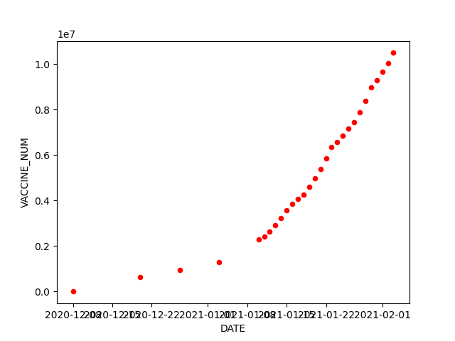

Vaccines Progress
Edward Jones-Healey
This graph is based on the latest government vaccine figures found here:
. New figures are usually published by 5pm. My algorithm grabs these numbers, and then updates the graph shown below, at 6pm (to allow for delays) everyday.
